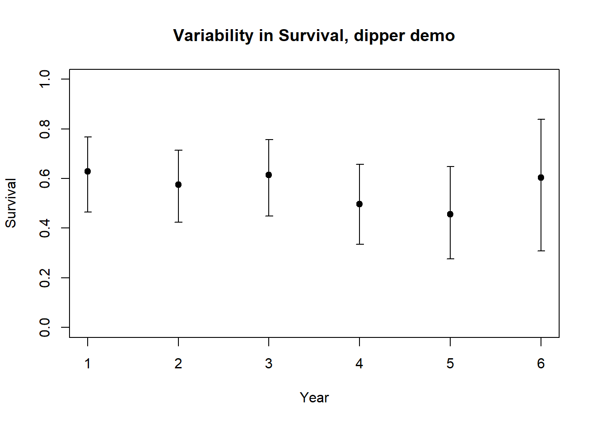

First, please download this R script and load it in Rstudio for later.
Next, let’s go over the basics from the lecture first- click here
Closed population – a population in which there is no recruitment (birth or immigration) or losses (death or emigration) during the period of study. Geographic and demographic closure.
Open population – a population that changes in size and composition due to births, deaths, and permanent movements (immigration and emigration).
It is important to note that for both closed- and open-population models, a primary task is to estimate the probability of detection, p. This is because most surveys of wild populations are imperfect- with few exceptions, we just can’t observe all individuals in a wild population every time we visit our study population in the wild.
This is easiest to see for estimating abundance: we know how many animals we SAW but in order to estimate abundance we need to know how many animals we DIDN’T SEE!! How do we know how many animals we didn’t see? We need to know the probability of detection- that is, the probability that any individual in the population is in our sample. If we know the probability of being in our sample, we automatically know the probability of NOT being in our sample (the number of individuals we didn’t capture)!
If we didn’t account for imperfect detection, our estimates of key population parameters like survival and fecundity/recruitment would be highly biased in most cases.
Capture-mark-recapture models correct for that bias by estimating the probability of detection (p) in addition to fundamental parameters like abundance, recruitment and survival. If we can estimate the probability of detection, we can correct for the bias it introduces into our data.
Let’s see how this works!
two visits – Lincoln-Petersen model
several visits (k>2) – Schnabel model – and other models that can be run via program CAPTURE (which can be run through Program MARK).
Basic underlying concept:
On the first visit, a sample of \(M\) animals is caught, marked, and released. Later, on a second visit to the study site, a sample of \(C\) animals is captured, of which \(R\) animals are recaptures that were previously marked. No new animals are marked during the second visit.
NOTE: animals do not need to be uniquely marked to estimate abundance using the L-P method.
If the key assumptions of this analysis are met (see below), then the proportion of marked animals recaptured in the second visit (\(\frac{R}{C}\)) should be equivalent to the proportion of marked animals (from the first visit) in the total population (\(\frac{M}{N}\)) such that:
\(\frac{R}{C} = \frac{M}{N}\)
where \(N\) is the total population size. Solving for \(N\) yields the estimator:
\(\hat N=\frac{C\cdot M}{R} \qquad \text{(Eq. 1)}\)
Imagine we were to capture 10 individuals during our first visit (\(M=10\)) and 8 individuals during our second visit (\(C=10\)). Of the 8 individuals captured in our second visit, 4 had been marked in the first visit. Therefore, \(p=\frac{R}{C}=0.5\). Another way of saying this is that for every individual we observed during the first site visit, we were likely to have missed one individual.
To estimate abundance, we add up the total number of individuals we saw during our first visit and the total number of individuals we missed during our first visit- this should represent the entire population!
Q: What is the total abundance?
The lower the fraction of the total population marked in the first visit (estimated as \(\frac{R}{C}\)), the more individuals we probably missed (failed to observe) in the first visit.
Q: What if we had only observed 2 (out of 8) marked individuals during the second visit?
NOTE: If sample size is small, the basic L-P estimator can be biased. For example, what happens if the number of recaptures in the second sample is zero?
A modified version with less bias was originally developed by Chapman (1951) and is commonly called the modified Petersen estimate or the Chapman estimator:
\(\hat N=\frac{(M+1)(C+1)}{R+1}-1 \qquad \text{(Eq. 2)}\)
This formula is a statistic estimating total population size on the basis of a sample (see lecture on parameter estimation for more).
We still need to make inference about the parameter, \(N\), on the basis of the statistic, \(\hat N\).
To do this, we need to understand the sampling uncertainty for this statistic (we need to ask: “what do we really know about the population, and what don’t we know?”). That is, if we collected a different sample from the same population, we might get a very different answer for \(N\). If we took 100 or 1000 different samples, we might get 100 or 1000 different estimates for \(N\)!! The variation among these estimates is the sampling uncertainty.
For the Lincoln-Peterson estimator, our uncertainty about this estimate (sampling variance) can be computed as:
\(Var(\hat N)=\frac{(M+1)(C+1)(M-R)(C-R)}{(R+1)^2(R+2)} \qquad \text{(Eq. 3)}\)
This formula technically represents Sampling Variance, which is a common way to represent parameter uncertainty in statistics.
The standard deviation of the sampling variance (usually called “standard error” of the statistic) is just the square root of the sampling variance:
\(StDev(\hat N) = \sqrt[]{Var(\hat N)} \qquad \text{(Eq. 4)}\)
Finally, the 95% confidence interval for \(\hat N\) is approximately 2 “standard error” units from the value of \(\hat N\).
\(\hat N \pm 1.965 * StDev(\hat N) \qquad \text{(Eq. 5)}\)
This method extends the Lincoln-Peterson method to a series of samples in which there are 2, 3, 4,…, k site visits. Individuals caught during each visit are first examined for marks, then all unmarked individuals are given a mark, and finally the individual is released back into the population.
Only a single type of mark needs to be used because we just need to distinguish 2 types of individuals: marked (caught in one or more prior samples); and unmarked (never caught before). For each visit t, the following is determined:
\(C_t\) = Total number of individuals captured during visit \(t\)
\(R_t\) = Number of previously-marked individuals (Recaptures) captured in visit \(t\) (the remainder of individuals captured in visit t must be given a new mark)
\(M_t\) = Total number of marked animals in the population just before the \(t\)th site visit.
Schnabel treated the multiple visits as a series of Lincoln-Peterson (L-P) samples and obtained a population estimate as a weighted average of the L-P estimates:
\(\hat N = \frac{\sum{M_tC_t}}{\sum{R_t}} \qquad \text{(Eq. 6)}\)
What about the sampling variance? It can be computed as:
\(Var(\frac{1}{\hat N})=\frac{\sum{R_t}}{(\sum{(C_tM_t))^2}} \qquad \text{(Eq. 7)}\)
Note that this formula gives you the sampling uncertainty (variance) for the inverse of N (\(\frac{1}{N}\))!
How do we compute a confidence interval around \(\hat N\)??
One simple way to is to first compute a confidence interval on the inverse of N using the same method described above (take square root of the variance):
\(\frac{1}{\hat N} \pm 1.965 * \sqrt[](Var(\frac{1}{\hat N})) \qquad \text{(Eq. 8)}\)
To compute the confidence interval for N, take the inverse of the lower and upper bounds (limits) of the confidence interval computed above!
Same assumptions as Lincoln-Petersen estimator essentially!
Note that capture probabilities can vary among visits (sampling periods) but not among individuals within a visit!
Let’s use the following example from the “gentle introduction to program mark”. This example represents a closed population that has been surveyed 6 times.
Load up the Excel file here. The first few lines should look something like this:
##########
# CLOSED POPULATION MODELS
##########
# Note: I recommend doing these lab activities in EXCEL, but you're more than welcome to try to do it in R (instead of handing in your work as an excel spreadsheet, just hand in your R code!)
###########
# First, load up the CSV file (you need to download it first)
# setwd() # remember to set your working directory before you read in the data!
head(read.csv("simple_closed.csv"))## sample1 sample2 sample3 sample4 sample5 sample6
## 1 0 0 0 1 1 1
## 2 0 0 0 1 1 1
## 3 0 0 0 1 1 1
## 4 0 0 0 1 1 1
## 5 0 0 0 1 1 1
## 6 0 0 0 1 1 11a. First, let’s imagine that we only have samples 1 and 2 (the first 2 columns of data)! Using these data, compute the L-P estimate of abundance using Eq. 2. Also compute the confidence interval for your abundance estimate. Show your work! I recommend using EXCEL for this!
1b. Now, use the Schnabel method to estimate abundance (and confidence interval around abundance) for this population. Show your work! Again, I recommend using EXCEL for this!
1c. Do the two estimates differ? Either way, which estimate do you trust more- the L-P estimate or the Schnabel estimate? Why?
(note: geographic closure is still a critical assumption- that is, no immigration or emigration!)
Cormack-Jolly-Seber model is the most basic model in Program MARK, and it only estimates survival parameters (not fecundity).
See the parameter estimation lecture for more information about open-population mark-recapture analysis!
For this exercise, we will use the classic European Dipper data!
The ‘marked’ package in R runs many of the same open-population models, and is much easier to use than Program MARK. Please install this package if haven’t already done so.
These data should look like this! Here it is in R (just the first 15 lines)!
## h1 h2 h3 h4 h5 h6 h7
## 1 1 1 1 1 1 1 0
## 2 1 1 1 1 1 0 0
## 3 1 1 1 1 0 0 0
## 4 1 1 1 1 0 0 0
## 5 1 1 0 1 1 1 0
## 6 1 1 0 0 0 0 0
## 7 1 1 0 0 0 0 0
## 8 1 1 0 0 0 0 0
## 9 1 1 0 0 0 0 0
## 10 1 1 0 0 0 0 0
## 11 1 1 0 0 0 0 0
## 12 1 0 1 0 0 0 0
## 13 1 0 1 0 0 0 0
## 14 1 0 0 0 0 0 0
## 15 1 0 0 0 0 0 0Program MARK wants a particular type of input file (.INP; just a text file with special formatting). For the dipper data, it should look something like this
Save this text file and re-name it with the extension “.inp” rather than the extension “.txt”
Your INP file should look something like this:
## ch group
## 1 1111110 1;
## 2 1111000 1;
## 3 1100000 1;
## 4 1100000 1;
## 5 1100000 1;
## 6 1100000 1;
## 7 1010000 1;
## 8 1000000 1;
## 9 1000000 1;
## 10 1000000 1;
## 11 1000000 1;
## 12 1000000 1;
## 13 111100 1;
## 14 111000 1;
## 15 110000 1;NOTE: if this doesn’t work, you can load this and other example files from the “gentle introduction” link! Scroll down to “Example data files” in the “book chapters $ data files” menu.
Open Program MARK! You can download the software here
Double-click the MARK icon to open Program MARK. Click the spreadsheet icon in the upper left corner to open a menu for Specifications for Mark Analysis. This menu allows you to specify the kind of analysis you will conduct (Select Data Type). Today we will start with a data set that includes live recaptures only so be sure this Data Type is selected (Cormack-Jolly-Seber model).
Look to the right and you will see a button: Click to Select File. Click this button and browse to find the “ed_males.inp” fil you just downloaded. Double click this file to open this file in Program Mark. Now click the ‘view this file’ button, which will allow you to see the data file. You will see encounter histories (e.g., 1110101, representing observations over 7 visits) followed by a space, followed by one or more additional columns, followed by a semicolon at the end. The encounter history indicates the occasions when each individual was encountered (actually observed), indicated by a 1, or not encountered, indicated by a 0. The length of the capture history is equal to the number of site visits. The column to the right of the capture histories indicate how many individuals in the population exhibit this particular capture history. The semicolon at the end indicates the end of the record. Note that in this encounter history each individual has its own record (the value in the final colummn is always 1). However, it is possible to specify only the unique observed encounter histories and indicate the number of individuals with each history.
We now have to provide MARK some information about the data. You should provide a title for the data to keep your results organized. Below the data file selection area you will find some buttons and counters to provide additional information. Encounter occasions needs information about the number of possible times an individual could be encountered (number of site visits). Count the number of columns in the dipper encounter history (there are 7) and enter this number for encounter occasions. Once you have completed these tasks click OK; MARK has the basic information it needs to perform an analysis.
A window will open entitled “apparent survival parameter (phi) males of live recaptures”. Before we discuss this window we need to open an additional window. Click on the PIM button on the top toolbar, then click on “open parameter index matrix”. Click select all then OK. Click on the Window button on the top toolbar then click on Tile. You should see 2 similar appearing windows all with the upper triangular of a matrix. Look more closely and you’ll see that the window for male survival has numbers ranging from 1 to 6 as columns go from left to right. The encounter probability matrices have numbers 7 to 12. These numbers specify the model structure by defining the number of survival and capture probabilities we wish to estimate! The model you have specified by default allows survival and encounter probabilities to vary annually.
Another useful way to visualize the parameters you wish to estimate is the “Parameter Index Chart”. Click on the PIM button on the top toolbar, then click on “open parameter index chart”. Here you see all parameters in one window- six different survival parameters and six different encounter probability parameters.
Q: Why are there only 6 survival parameters, when there are seven surveys??
To run this model click on the small button with the green arrow (third from left). A new window will open asking for the title for the analysis and the model name. Use ‘dippertest’ or another descriptive name for the analysis. Identify the model as: “{phi(t) p(t)}”, which indicates that survival and encounter probabilities can each vary across time, independently. This model is among the most general we can run for this data set (sometimes this is called the “full model” to distinguish from “reduced models” that are less-complex versions of this model).
Click OK, and a new window will ask you if you want to use the identity matrix because no design matrix was specified. Click yes (or OK) (you will learn more about the design matrix later, in NRES 488/688!). A new black window with scrolling text will open indicating that MARK is doing calculations (the numerical methods to maximize the likelihood for the data and specified model).
When Mark is finished a new window will open asking you if you want to append the model to the database. Click yes and a new table (The Results Browser) will open. The model is identified on the left based on the notation you provided, AIC, AIC weight, number of parameters and deviances are all reported. For now you can consider AIC as a ranking of the quality of the models from best (low AIC) to worst (high AIC). “Deviance” is a measure of how well the model fits the data.
Re-open the PIMs for survival and capture probability. Use the minus button to reduce the numbers in survival windows to 1 for both males and females and 2 for the both the windows for encounter probabilities (for the latter reduce all matrix entries to 1 then use the plus button to increase them to 2). Use the green arrow to run this model and follow the same procedure as for the earlier model to run this model. Identify the model as {phi(.),p(.)}, which indicates that both parameters are constant across both groups and time. This is the simplest model we can run for these data. Again, use the identity matrix and append the results to the Results Browser. The “dot” model performs better (lower AIC) and has fewer parameters so it is the best of the two models run so far!
Examine Parameter Estimates: To examine parameter estimates click on the model, then move the cursor to the top tool bar and click on ‘Retrieve’. Then click on current model. To see the parameter estimates for the retrieved model return the curser to the Results Browser and click the fourth icon from the left (the third minipage from the left). A text file will open with a list of parameters and their estimates (“view estimates of real parameters in notepad window”). For the ‘dot’ model you will only see one survival estimate and one encounter probability because you specified that both parameters would be constant across time.
Now retrieve the {phi(t) p(t)} model and examine parameter estimates for this model. You will see 6 survival estimates and 6 estimates for detection probability. These are indexed using the numbers you provided in the PIMs. Notice that the 6th estimates for both phi and p have standard error that are either very large or zero. These are the estimates for the last survival and encounter probability for each group, which cannot be estimated.
##########
# OPEN POPULATION MODELS
##########
library(marked) # remember to install the 'marked' package if you haven't already done this
#?crm # to get help on the main parameter estimation function in "marked"
# library(help="marked")
# vignette("markedVignette","marked")
##########
# load data!
data(dipper)
dipper.male <- dipper[which(dipper$sex=="Male"),] # extract only the males, to compare with the Mark example
#############
# Process data
dipper.proc=process.data(dipper.male,model="cjs",begin.time=1) # Helper function- process the data for CJS model## 124 capture histories collapsed into 24dipper.ddl=make.design.data(dipper.proc) # another helper function- process data!
##########
# Fit models
########
# fit time-varying cjs model
mod.Phit.pt <- crm(dipper.proc,dipper.ddl,model.parameters=list(Phi=list(formula=~time),p=list(formula=~time)),method="Nelder-Mead",hessian = T)## Computing initial parameter estimates## Starting optimization for 12 parameters...##
Number of evaluations: 100 -2lnl: 352.390871
Number of evaluations: 200 -2lnl: 329.3590213
Number of evaluations: 300 -2lnl: 321.3664886
Number of evaluations: 400 -2lnl: 317.1142841
Number of evaluations: 500 -2lnl: 316.2055371
Number of evaluations: 600 -2lnl: 316.0677887
Number of evaluations: 700 -2lnl: 315.8890344
Number of evaluations: 800 -2lnl: 315.6884902
Number of evaluations: 900 -2lnl: 315.6684003
Number of evaluations: 1000 -2lnl: 315.6597409
Number of evaluations: 1100 -2lnl: 315.6381675
Number of evaluations: 1200 -2lnl: 315.6287795
Number of evaluations: 1300 -2lnl: 315.6189911
Number of evaluations: 1400 -2lnl: 315.6126529
Number of evaluations: 1500 -2lnl: 315.6027174
Number of evaluations: 1600 -2lnl: 315.586477
Number of evaluations: 1700 -2lnl: 315.5547475
Number of evaluations: 1800 -2lnl: 315.5139539
Number of evaluations: 1900 -2lnl: 315.5012071
Number of evaluations: 2000 -2lnl: 315.5004352
Number of evaluations: 2100 -2lnl: 315.5000445
Number of evaluations: 2200 -2lnl: 315.4999397
Number of evaluations: 2300 -2lnl: 315.4998837
Number of evaluations: 2400 -2lnl: 315.499803
Number of evaluations: 2500 -2lnl: 315.4996289
Number of evaluations: 2600 -2lnl: 315.499061
Number of evaluations: 2700 -2lnl: 315.4980904
Number of evaluations: 2800 -2lnl: 315.4967962
Number of evaluations: 2900 -2lnl: 315.4947377
Number of evaluations: 3000 -2lnl: 315.4867421
Number of evaluations: 3100 -2lnl: 315.4810043
Number of evaluations: 3200 -2lnl: 315.4739272
Number of evaluations: 3300 -2lnl: 315.4724909
Number of evaluations: 3400 -2lnl: 315.4718453
Number of evaluations: 3500 -2lnl: 315.4708776
Number of evaluations: 3600 -2lnl: 315.4692398
Number of evaluations: 3700 -2lnl: 315.4667979
Number of evaluations: 3800 -2lnl: 315.4652691
Number of evaluations: 3900 -2lnl: 315.4645755
Number of evaluations: 4000 -2lnl: 315.4634148
Number of evaluations: 4100 -2lnl: 315.4625663
Number of evaluations: 4200 -2lnl: 315.4620345
Number of evaluations: 4300 -2lnl: 315.4617224
Number of evaluations: 4400 -2lnl: 315.4616406
Number of evaluations: 4500 -2lnl: 315.4632859
Number of evaluations: 4600 -2lnl: 315.5085803
Number of evaluations: 4700 -2lnl: 315.4843468
Number of evaluations: 4800 -2lnl: 315.8280508
Number of evaluations: 4900 -2lnl: 315.4667336
Number of evaluations: 5000 -2lnl: 315.7700012
Number of evaluations: 5100 -2lnl: 315.4616224## Computing hessian...##
Number of evaluations: 100 -2lnl: 315.9317117
Number of evaluations: 200 -2lnl: 315.482982
Number of evaluations: 300 -2lnl: 315.560414
Number of evaluations: 400 -2lnl: 315.4597501
Number of evaluations: 500 -2lnl: 315.4938468
Number of evaluations: 600 -2lnl: 315.4685878##
## Elapsed time in minutes: 0.011mod.Phit.pt # print out model##
## crm Model Summary
##
## Npar : 12
## -2lnL: 315.4616
## AIC : 339.4616
##
## Beta
## Estimate se lcl ucl
## Phi.(Intercept) 0.76917287 0.8246822 -0.8472042 2.3855500
## Phi.time2 -0.93353673 0.9797204 -2.8537887 0.9867153
## Phi.time3 -0.81355718 0.8953528 -2.5684486 0.9413342
## Phi.time4 -0.30130169 0.9013880 -2.0680222 1.4654188
## Phi.time5 -0.52970098 0.8840458 -2.2624307 1.2030288
## Phi.time6 -0.24269895 1.1429824 -2.4829445 1.9975466
## p.(Intercept) 2.29770785 2.4197424 -2.4449873 7.0404030
## p.time3 0.36271463 2.9435519 -5.4066470 6.1320763
## p.time4 0.12171286 2.6509874 -5.0742225 5.3176482
## p.time5 -0.13875596 2.5714196 -5.1787384 4.9012265
## p.time6 0.27351139 2.6085223 -4.8391924 5.3862152
## p.time7 0.03276177 3.9286010 -7.6672962 7.7328198mod.Phit.pt$results$AIC # extract AIC## [1] 339.4616########
# fit time-invariant cjs model
mod.Phidot.pdot <- crm(dipper.proc,dipper.ddl,model.parameters = list(Phi=list(formula=~1),p=list(formula=~1)),method="Nelder-Mead",hessian = TRUE)## Computing initial parameter estimates## Starting optimization for 2 parameters...## Computing hessian...##
## Elapsed time in minutes: 0.0032mod.Phidot.pdot##
## crm Model Summary
##
## Npar : 2
## -2lnL: 318.4938
## AIC : 322.4938
##
## Beta
## Estimate se lcl ucl
## Phi.(Intercept) 0.2650121 0.1446738 -0.01854855 0.5485728
## p.(Intercept) 2.4859171 0.5120269 1.48234428 3.4894898mod.Phidot.pdot$results$AIC## [1] 322.4938###########
# compare all models with AIC
###########
######
# Set up models to run (must have either "Phi." or "p." in the name)
Phi.dot <- list(formula=~1)
Phi.time <- list(formula=~time)
p.dot <- list(formula=~1)
p.time <- list(formula=~time)
cml=create.model.list(c("Phi","p")) # create list of all models to run
######
# Run all models
allmodels <- crm.wrapper(cml,data=dipper.proc, ddl=dipper.ddl,external=FALSE,accumulate=FALSE,method="Nelder-Mead",hessian=TRUE)## Phi.dot.p.dot## Computing initial parameter estimates## Starting optimization for 2 parameters...## Computing hessian...##
## Elapsed time in minutes: 0.0032## Phi.dot.p.time## Computing initial parameter estimates## Starting optimization for 7 parameters...##
Number of evaluations: 100 -2lnl: 339.3932231
Number of evaluations: 200 -2lnl: 320.8680856
Number of evaluations: 300 -2lnl: 318.7504926
Number of evaluations: 400 -2lnl: 317.5914298
Number of evaluations: 500 -2lnl: 317.5901142
Number of evaluations: 600 -2lnl: 317.5864386
Number of evaluations: 700 -2lnl: 317.5831841
Number of evaluations: 800 -2lnl: 317.5783913
Number of evaluations: 900 -2lnl: 317.566475
Number of evaluations: 1000 -2lnl: 317.3901654
Number of evaluations: 1100 -2lnl: 316.9823423
Number of evaluations: 1200 -2lnl: 316.2811304
Number of evaluations: 1300 -2lnl: 316.1853346
Number of evaluations: 1400 -2lnl: 316.1845581
Number of evaluations: 1500 -2lnl: 316.1821717
Number of evaluations: 1600 -2lnl: 316.1717552
Number of evaluations: 1700 -2lnl: 316.1620764
Number of evaluations: 1800 -2lnl: 316.119147
Number of evaluations: 1900 -2lnl: 316.1169034
Number of evaluations: 2000 -2lnl: 316.1517872
Number of evaluations: 2100 -2lnl: 316.1190395## Computing hessian...##
Number of evaluations: 100 -2lnl: 316.1220471
Number of evaluations: 200 -2lnl: 316.1169636##
## Elapsed time in minutes: 0.005## Phi.time.p.dot## Computing initial parameter estimates
##
## Starting optimization for 7 parameters...##
Number of evaluations: 100 -2lnl: 315.5021097
Number of evaluations: 200 -2lnl: 315.5014817
Number of evaluations: 300 -2lnl: 315.5008036
Number of evaluations: 400 -2lnl: 315.5004163
Number of evaluations: 500 -2lnl: 315.5000228
Number of evaluations: 600 -2lnl: 315.4997163
Number of evaluations: 700 -2lnl: 315.4990839
Number of evaluations: 800 -2lnl: 315.4989262
Number of evaluations: 900 -2lnl: 315.6317777
Number of evaluations: 1000 -2lnl: 315.4986868
Number of evaluations: 1100 -2lnl: 315.4989119## Computing hessian...##
Number of evaluations: 100 -2lnl: 315.5145048
Number of evaluations: 200 -2lnl: 315.5153169##
## Elapsed time in minutes: 0.0043## Phi.time.p.time## Computing initial parameter estimates## Starting optimization for 12 parameters...##
Number of evaluations: 100 -2lnl: 352.390871
Number of evaluations: 200 -2lnl: 329.3590213
Number of evaluations: 300 -2lnl: 321.3664886
Number of evaluations: 400 -2lnl: 317.1142841
Number of evaluations: 500 -2lnl: 316.2055371
Number of evaluations: 600 -2lnl: 316.0677887
Number of evaluations: 700 -2lnl: 315.8890344
Number of evaluations: 800 -2lnl: 315.6884902
Number of evaluations: 900 -2lnl: 315.6684003
Number of evaluations: 1000 -2lnl: 315.6597409
Number of evaluations: 1100 -2lnl: 315.6381675
Number of evaluations: 1200 -2lnl: 315.6287795
Number of evaluations: 1300 -2lnl: 315.6189911
Number of evaluations: 1400 -2lnl: 315.6126529
Number of evaluations: 1500 -2lnl: 315.6027174
Number of evaluations: 1600 -2lnl: 315.586477
Number of evaluations: 1700 -2lnl: 315.5547475
Number of evaluations: 1800 -2lnl: 315.5139539
Number of evaluations: 1900 -2lnl: 315.5012071
Number of evaluations: 2000 -2lnl: 315.5004352
Number of evaluations: 2100 -2lnl: 315.5000445
Number of evaluations: 2200 -2lnl: 315.4999397
Number of evaluations: 2300 -2lnl: 315.4998837
Number of evaluations: 2400 -2lnl: 315.499803
Number of evaluations: 2500 -2lnl: 315.4996289
Number of evaluations: 2600 -2lnl: 315.499061
Number of evaluations: 2700 -2lnl: 315.4980904
Number of evaluations: 2800 -2lnl: 315.4967962
Number of evaluations: 2900 -2lnl: 315.4947377
Number of evaluations: 3000 -2lnl: 315.4867421
Number of evaluations: 3100 -2lnl: 315.4810043
Number of evaluations: 3200 -2lnl: 315.4739272
Number of evaluations: 3300 -2lnl: 315.4724909
Number of evaluations: 3400 -2lnl: 315.4718453
Number of evaluations: 3500 -2lnl: 315.4708776
Number of evaluations: 3600 -2lnl: 315.4692398
Number of evaluations: 3700 -2lnl: 315.4667979
Number of evaluations: 3800 -2lnl: 315.4652691
Number of evaluations: 3900 -2lnl: 315.4645755
Number of evaluations: 4000 -2lnl: 315.4634148
Number of evaluations: 4100 -2lnl: 315.4625663
Number of evaluations: 4200 -2lnl: 315.4620345
Number of evaluations: 4300 -2lnl: 315.4617224
Number of evaluations: 4400 -2lnl: 315.4616406
Number of evaluations: 4500 -2lnl: 315.4632859
Number of evaluations: 4600 -2lnl: 315.5085803
Number of evaluations: 4700 -2lnl: 315.4843468
Number of evaluations: 4800 -2lnl: 315.8280508
Number of evaluations: 4900 -2lnl: 315.4667336
Number of evaluations: 5000 -2lnl: 315.7700012
Number of evaluations: 5100 -2lnl: 315.4616224## Computing hessian...##
Number of evaluations: 100 -2lnl: 315.9317117
Number of evaluations: 200 -2lnl: 315.482982
Number of evaluations: 300 -2lnl: 315.560414
Number of evaluations: 400 -2lnl: 315.4597501
Number of evaluations: 500 -2lnl: 315.4938468
Number of evaluations: 600 -2lnl: 315.4685878##
## Elapsed time in minutes: 0.0083allmodels## model npar AIC DeltaAIC weight neg2lnl convergence
## 1 Phi(~1)p(~1) 2 322.4938 0.000000 0.9501710921 318.4938 0
## 3 Phi(~time)p(~1) 7 329.4989 7.005072 0.0286200070 315.4989 0
## 2 Phi(~1)p(~time) 7 330.1169 7.623055 0.0210124331 316.1169 0
## 4 Phi(~time)p(~time) 12 339.4616 16.967798 0.0001964678 315.4616 0#######
# get parameter estimates and confidence intervals for best model
allmodels[[1]]##
## crm Model Summary
##
## Npar : 2
## -2lnL: 318.4938
## AIC : 322.4938
##
## Beta
## Estimate se lcl ucl
## Phi.(Intercept) 0.2650121 0.1446738 -0.01854855 0.5485728
## p.(Intercept) 2.4859171 0.5120269 1.48234428 3.4894898#######
# make predictions and plot them.
predict(allmodels[[1]])$Phi## occ estimate se lcl ucl
## 1 6 0.565868 0.03554077 0.495363 0.6338044Phi_by_year <- predict(allmodels[[3]])$Phi # predict Phi for all years (based on the best Phi(t) model)
library(Hmisc) #load Hmisc package- has a nice error bar function
plot(1:nrow(Phi_by_year),Phi_by_year$estimate,xlab="Year",ylab="Survival",ylim=c(0,1),main="Variability in Survival, dipper demo")
errbar(1:nrow(Phi_by_year),Phi_by_year$estimate,Phi_by_year$ucl,Phi_by_year$lcl,add=T)
Use R or MARK to answer the following questions:
2a. [building off the demonstration in R and Program MARK]. Run the following model: capture probability varies by year, but survival is constant across time. Is this model better than the current top model (lower AIC value means a better model)? What are the parameter estimates for this model? What are the confidence intervals for these parameters?
2b. Run the following model: capture probability is constant across time, but survival exhibits temporal variability. Is this model better than the current top model? What are the parameter estimates for this model? What are the confidence intervals for these parameters?
2c. Use the results from the time-dependent model [phi(t)p(t)] to estimate the mean per-capita survival rate and the environmental stochasticity (annual variation) in survival for European dippers. In other words, what is the mean and standard deviation for the Normal random number generator you would you use to represent annual variation in survival for this population? Explain how you obtained your answer!
Please enter all written responses in Top Hat and submit!
Where appropriate, Excel files and R scripts can be included as part of your lab submission (can be submitted separately in top hat.
This lab is optional. For extra credit please submit by Friday Apr 29
Now, before running the next model, you need to download this dataset to your R working directory.